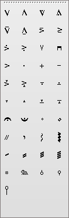

입력도구띠\<연주기법기호>입력도구띠
이 입력도구띠는 스타카토, 테누토, 훼르마타, 페달
등의 연주기법기호를 입력하기 위한 도구띠입니다. 이 입력도구띠는 표준입력도구띠에서 <연주기법기호>단추를
누르면 표시됩니다. 또는 <보기\도구띠\연주기법기호>차림표를
선택하거나 [F5]건을 누르면 표시됩니다

입력방법
·? 입력도구띠에서 입력하려는 도구단추를 선택하고 악보의 입력위치를 마우스로 찰칵합니다.
·? 아르페지오의 입력은 입력위치에서 마우스를 아래로 끌기하면 됩니다.
·? 기호를 소리표의 머리에 맞추어 입력하면 그 기호는 찰칵한 소리표에 소속됩니다. 이 경우 소리표를 이동, 삭제하면 기호도 이동, 삭제됩니다.
·? 소리표에 소속되지 않는 기호들은 페지에 소속됩니다.
 소리표소속기호로 입력된 트레몰기호, 아르페지오기호는 연주에 반영됩니다. 즉 트레몰연주기호
소리표소속기호로 입력된 트레몰기호, 아르페지오기호는 연주에 반영됩니다. 즉 트레몰연주기호  ,
, ,
, ,
,  들을 소리표소속기호로 입력하면 연주시에 트레몰을 연주하며
아르페지오기호
들을 소리표소속기호로 입력하면 연주시에 트레몰을 연주하며
아르페지오기호  ,
,  를 입력하면 화음으로 된 소리표들을 흐름화음으로 연주합니다.
를 입력하면 화음으로 된 소리표들을 흐름화음으로 연주합니다.